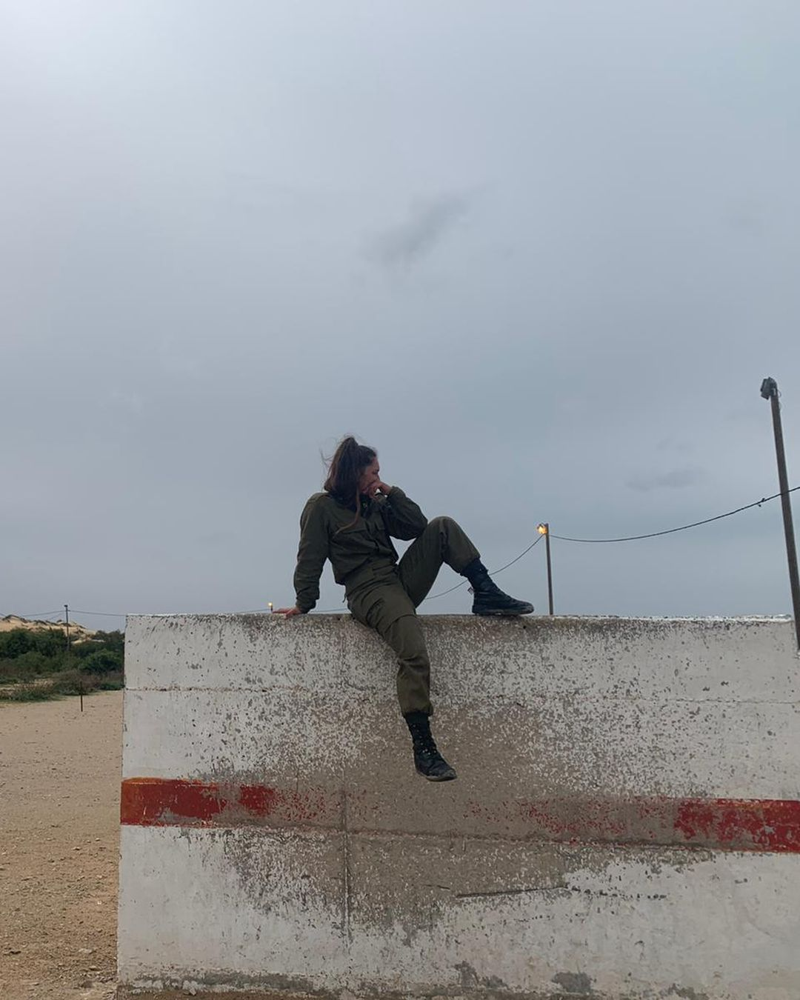

נעים מאוד, שמחה לביא
מרצה ויזמית חברתית | חרדית לשעבר | קצינה לוחמת
נערה בסיכוי.נגד כל הסיכונים.
מה קורה כשנערה שהוגדרה בסיכון מחליטה שהסיפור שלה לא ייגמר שם?
להזמנת הרצאהמהילדה מביתר עילית, המגזר החרדי ומשמרת הצניעות, דרך פיקוד כקצינה קרבית בצה״ל, הפציעה והשיקום ועד ליזמות עסקית וחברתית בשטח.
״כפעילה לצמצום פערים בחברה הישראלית, אני מחברת היום בין כל העולמות עם מטרה אחת ברורה: לייצר פתרונות מעשיים בשטח, לבנות חוסן ולמגר פשיעה בקרב בני נוער. בדרך הזו גיליתי שהריפוי האמיתי מתחיל בעשייה, אבל הדלק שיניע אותך בכל בוקר מתחיל בזה שפשוט יהיה לך אכפת.״




כל הקטעים מהתיקייה
19 קטעים לבחירה
כל קטע באורך 3 שניות, חתוך כמו שהוא יופיע בפתיחה. רוצים להחליף או להוסיף? כתבו לי את המספרים.